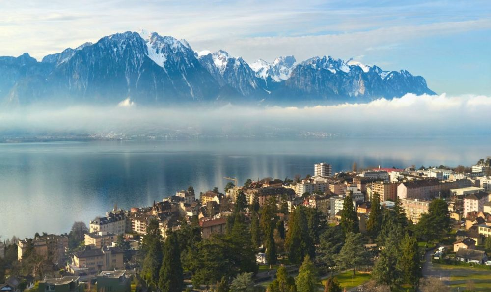

Descoperă Montreux - O călătorie în Elveția
Montreux este un oraș fermecător situat pe malurile Lacului Geneva, oferind o varietate de atracții captivante pentru vizitatori:
-

Castelul Chillon din Montreux - Istorie și arhitectură
Vizitați acest castel medieval impresionant situat pe malul lacului, cu camere și pasaje pline de istorie.
-

Promenada de pe malul lacului din Montreux - Relaxare și peisaje
Plimbăriți-vă pe promenadă și savurați vederile panoramice asupra lacului și munților.
-

Statuia Freddie Mercury din Montreux - Omagiu muzical
Descoperiți statuia ce omagiază celebrul solist Queen, Freddie Mercury, care a locuit în Montreux.
-

Calea Golden Pass din Montreux - Călătorie pitorească
Experimentați o călătorie scenică cu trenul pe calea Golden Pass, trecând prin peisaje spectaculoase.
-

Festivalul Jazz din Montreux - Muzică și divertisment
Participați la acest renumit festival de jazz care atrage artiști de talie mondială și entuziaști ai muzicii.
Concluzii
Montreux combină istoria, natura și cultura muzicală într-o experiență unică pentru vizitatori.